Публикация топика
- Цель эксперимента
- Подключение оборудования
- Анализ основного кода
- Компиляция, загрузка и прошивка firmware
- Результаты эксперимента
1. Цель эксперимента
Изучить компонент STM32-microROS, подключиться к окружению ROS2 и публиковать топики типа int32.
2. Подключение оборудования
Как показано на рисунке ниже, плата управления STM32 построена на чипе STM32H743 и может работать с программой на базе фреймворка micro-ROS.
Подключите USB-кабель Type-C к USB-порту главной вычислительной платы и к порту USB Connect на плате управления STM32.
Если у вас есть модуль USB-UART, например CH340, вы можете подключить его к программе для работы с последовательным портом, чтобы просматривать отладочную информацию.
Поскольку ROS2 требует окружения Ubuntu, рекомендуется установить на главную вычислительную плату Ubuntu 22.04 и окружение ROS2.
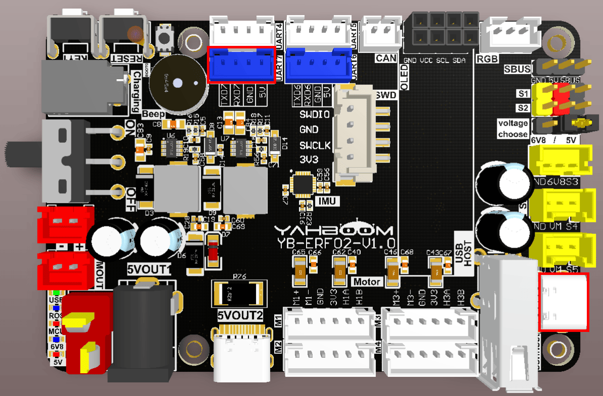
Примечание: существует много типов главных вычислительных плат. Здесь в качестве примера рассматривается плата серии Jetson Orin с заводским образом, прошитым по умолчанию.
3. Анализ основного кода
Путь к исходному коду программы в виртуальной машине:
Board_Samples/Microros_Samples/Publisher
Поскольку micro-ROS должен обрабатывать более сложные задачи, рекомендуется включить функцию FREERTOS в STM32 и создать новую задачу обработки micro-ROS.
Поскольку используется компонент FreeRTOS, чтобы избежать предупреждений, источник базового тактового сигнала системы нужно заменить на таймер — в данном случае на таймер 7.
Поскольку micro-ROS должен передавать большой объём данных, скорость передачи изменена на 2 Мбит/с, а также включены каналы DMA для TX и RX.
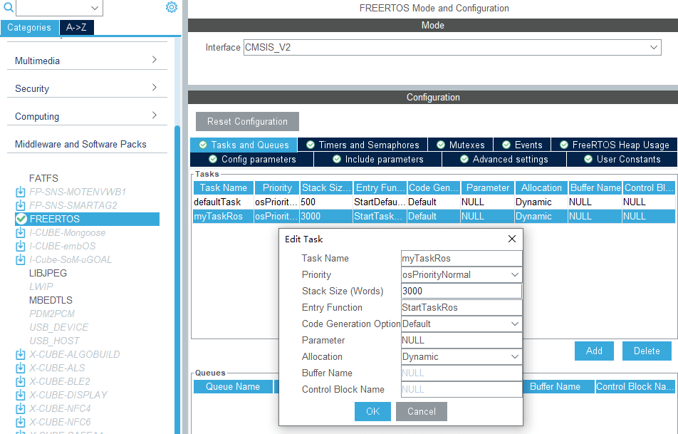

Поскольку последовательный порт 1 используется для связи по micro-ROS, вывод отладочной информации перенесён на последовательный порт 7. Установите скорость передачи 115200, длину данных 8 бит, без бита паритета и 1 стоп-бит.
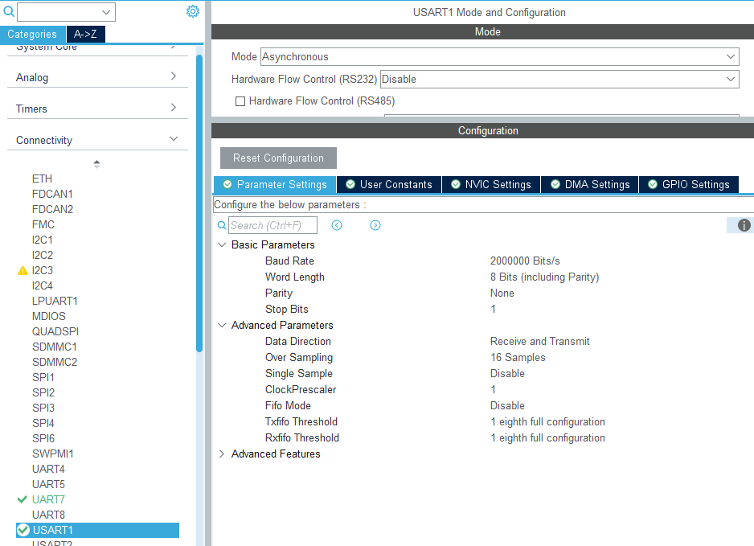

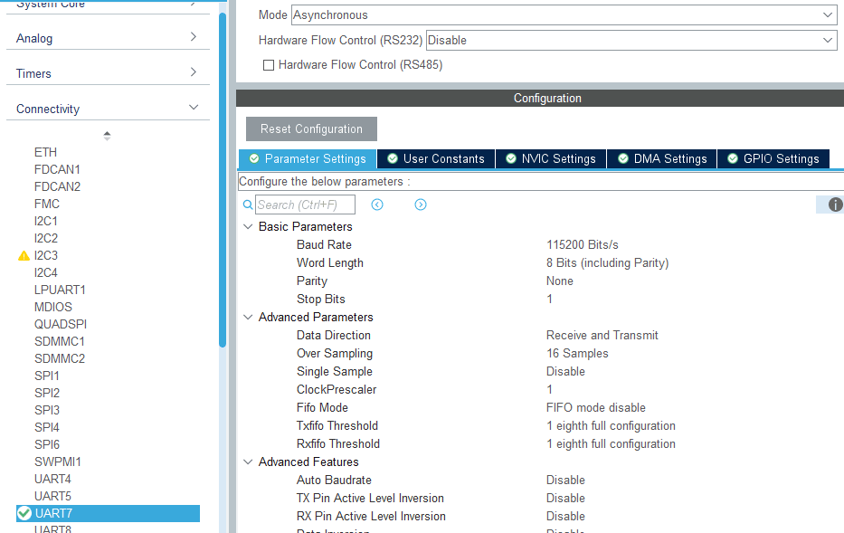
Для удобства просмотра отладочный последовательный порт последующих уроков по micro-ROS переопределён на последовательный порт 7.
int _write(int file, char*p, int len)
{
HAL_UART_Transmit(&huart7, (uint8_t *)p, len, 0xFF);
return len;
}
Откройте свойства проекта правой кнопкой мыши, затем перейдите в [Settings] -> [MCU/MPU GCC Compiler] -> [Include paths], чтобы добавить путь к директории заголовочных файлов microros, и нажмите [Apply], чтобы применить изменения.
Добавьте папку microros как путь к исходному коду проекта.
Импортируйте путь к библиотеке microros.
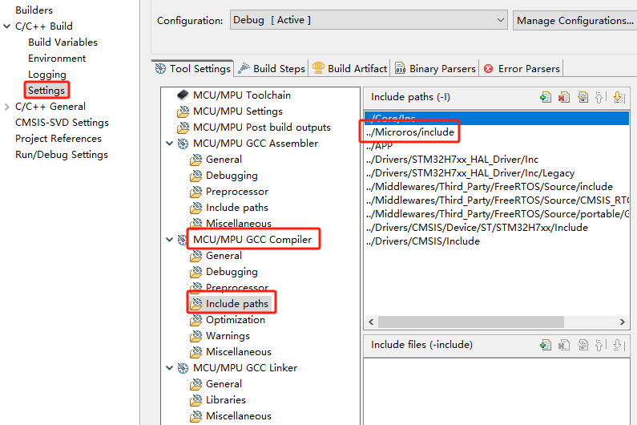
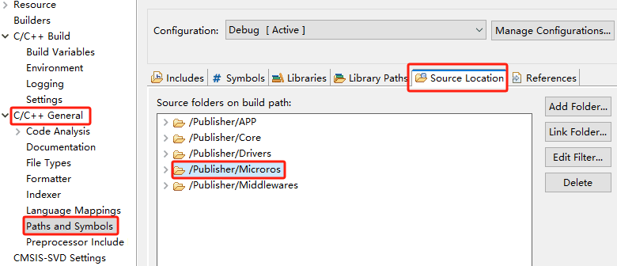
Подключите файл библиотеки microros к проекту. Убедитесь, что имя совпадает с именем файла статической библиотеки libmicroros.a (без учёта префикса "lib" и суффикса ".a").
Инициализация конфигурации micro-ROS. Значение ros2_domain_id по умолчанию равно 30, что соответствует настройке заводского образа. Если DOMAINID окружения ROS2 изменён на другое значение, переменную ros2_domain_id также необходимо изменить на то же значение для нормальной связи.
allocator = rcl_get_default_allocator();
rcl_init_options_t init_options = rcl_get_zero_initialized_init_options();
RCCHECK(rcl_init_options_init(&init_options, allocator));
RCCHECK(rcl_init_options_set_domain_id(&init_options, ros2_domain_id));
rmw_init_options_t *rmw_options =
rcl_init_options_get_rmw_init_options(&init_options);
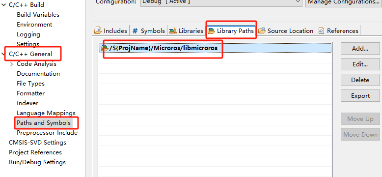
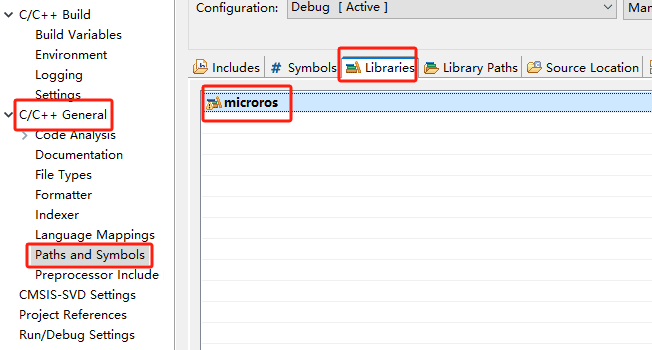
Настройка последовательного порта связи micro-ROS — указывается последовательный порт 1.
int32_t set_microros_serial_transports_with_options(rmw_init_options_t *
rmw_options)
{
int32_t ret = 0;
ret = rmw_uros_options_set_custom_transport(
true,
(void *) &huart1,
cubemx_transport_open,
cubemx_transport_close,
cubemx_transport_write,
cubemx_transport_read,
rmw_options
);
return ret;
}
Настройка метода запроса памяти в системе micro-ROS.
int set_microros_freeRTOS_allocator(void)
{
rcl_allocator_t freeRTOS_allocator =
rcutils_get_zero_initialized_allocator();
freeRTOS_allocator.allocate = microros_allocate;
freeRTOS_allocator.deallocate = microros_deallocate;
freeRTOS_allocator.reallocate = microros_reallocate;
freeRTOS_allocator.zero_allocate = microros_zero_allocate;
if (!rcutils_set_default_allocator(&freeRTOS_allocator)) {
printf("Error on default allocators (line %d)\n", __LINE__);
return -1;
}
return 0;
}
Попытка подключения к proxy (агенту). Переход к следующему шагу происходит только при успешном подключении. Если подключение к proxy не удалось, система остаётся в состоянии подключения. В этом случае нужно запустить скрипт proxy на главной вычислительной плате, чтобы установить соединение.
while (1)
{
osDelay(500);
state = rclc_support_init_with_options(&support, 0, NULL, &init_options,
&allocator);
if (state == RCL_RET_OK) break;
printf("Reconnecting agent...\n");
}
После подключения к proxy создаётся узел (node) "YB_Example_Node", где ros2_namespace по умолчанию пуст, что означает пространство имён узла.
printf("Start YB_Example_Node\n");
node = rcl_get_zero_initialized_node();
RCCHECK(rclc_node_init_default(&node, "YB_Example_Node",
(char*)ros2_namespace, &support));
Создание издателя (publisher) "int32_publisher" с указанием, что информация издателя имеет тип std_msgs/msg/Int32.
RCCHECK(rclc_publisher_init_default(
&publisher,
&node,
ROSIDL_GET_MSG_TYPE_SUPPORT(std_msgs, msg, Int32),
"int32_publisher"));
Создание таймера издателя с частотой публикации 1 Гц.
#define PUBLISHER_TIMEOUT (1000)
RCCHECK(rclc_timer_init_default(
&publisher_timer,
&support,
RCL_MS_TO_NS(PUBLISHER_TIMEOUT),
publisher_callback));
Создание исполнителя (executor), где параметр executor_count — это количество сущностей, контролируемых исполнителем; оно должно быть не меньше суммы количества подписчиков и издателей, добавленных в исполнитель. Добавление таймера издателя в исполнитель.
printf("executor_count:%d\n", executor_count);
executor = rclc_executor_get_zero_initialized_executor();
RCCHECK(rclc_executor_init(&executor, &support.context, executor_count,
&allocator));
// Add a timer to the executor
RCCHECK(rclc_executor_add_timer(&executor, &publisher_timer));
Функция публикации информации выполняется в callback-функции таймера издателя. Для удобства просмотра выводится текущее значение msg.data. После завершения публикации msg.data автоматически увеличивается на 1.
void publisher_callback(rcl_timer_t *timer, int64_t last_call_time)
{
RCLC_UNUSED(last_call_time);
if (timer != NULL)
{
printf("Publishing: %d\n", (int) msg.data);
RCSOFTCHECK(rcl_publish(&publisher, &msg, NULL));
msg.data++;
}
}
Узел и топик обработаны, индикатор питания LED_MCU включён. Вызов rclc_executor_spin_some в цикле обеспечивает нормальную работу micro-ROS.
LED_ROS_ON();
uint32_t lastWakeTime = xTaskGetTickCount();
while (ros_error < 3)
{
rclc_executor_spin_some(&executor, RCL_MS_TO_NS(ROS2_SPIN_TIMEOUT_MS));
vTaskDelayUntil(&lastWakeTime, 10);
// vTaskDelay(pdMS_TO_TICKS(100));
}
Если agent отключился или возникла ошибка в топике, система автоматически перезапускает микроконтроллер.
printf("ROS Task End\n");
printf("Restart System!!!\n");
vTaskDelay(pdMS_TO_TICKS(10));
HAL_NVIC_SystemReset();
4. Компиляция, загрузка и прошивка firmware
Выберите проект для компиляции в окне управления файлами STM32CUBEIDE и нажмите кнопку компиляции на панели инструментов, чтобы начать компиляцию.
Если ошибок и предупреждений нет, компиляция завершена успешно.
Поскольку последовательный порт связи Type-C, используемый агентом (agent) micro-ROS, совмещён с портом прошивки, рекомендуется использовать для прошивки инструмент ST-Link.
Если вы прошиваете через последовательный порт, сначала подключите кабель Type-C к USB-порту компьютера, войдите в режим загрузки через последовательный порт, прошейте firmware, а затем снова подключите кабель к USB-порту главной вычислительной платы.
5. Результаты эксперимента
Светодиод MCU_LED мигает каждые 200 миллисекунд.
Если proxy (агент) не запущен в терминале главной вычислительной платы, введите следующую команду, чтобы запустить его. Если proxy уже запущен, остановите его и запустите повторно.
sh ~/start_agent.sh
После успешного подключения создаются узел (node) и издатель (publisher).


Теперь вы можете открыть другой терминал на виртуальной машине/компьютере, чтобы просмотреть узел /YB_Example_Node.
ros2 node list
ros2 node info /YB_Example_Node
Подпишитесь на данные топика /int32_publisher.
ros2 topic echo /int32_publisher
Нажмите Ctrl+C, чтобы завершить выполнение команды.
Проверьте частоту публикации топика /int32_publisher. Частота около 1 Гц является нормой.
ros2 topic hz /int32_publisher
Нажмите Ctrl+C, чтобы завершить выполнение команды.
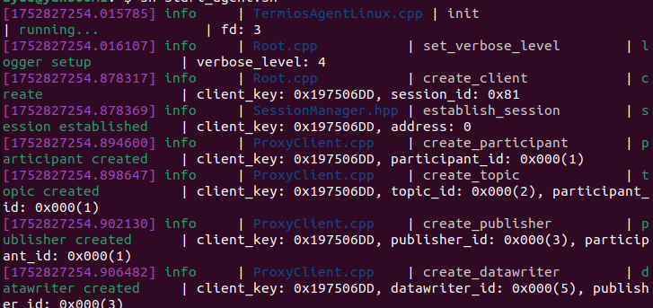
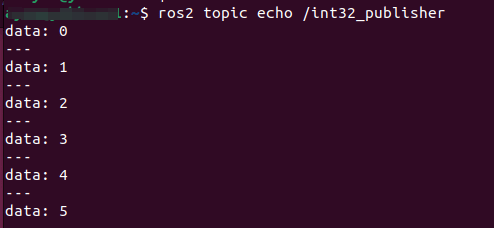
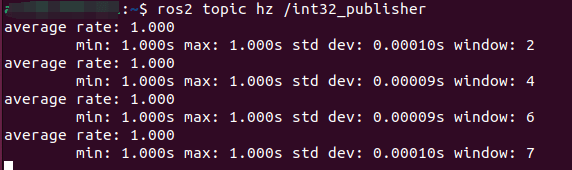